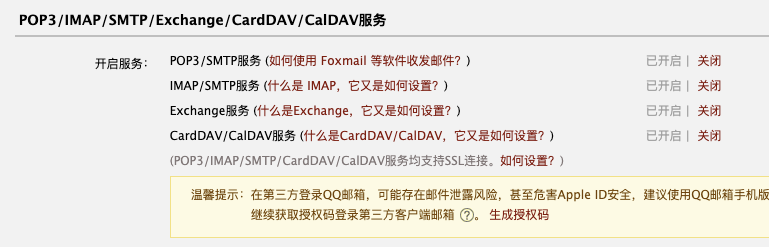

- 00 导读 入门Python的必备知识.md.html
- 00 开篇词 重复工作这么多，怎样才能提高工作效率？.md.html
- 01 拆分与合并：如何快速地批量处理内容相似的Excel？.md.html
- 02 善用Python扩展库：如何批量合并多个文档？.md.html
- 03 图片转文字：如何提高识别准确率？.md.html
- 04 函数与字典：如何实现多次替换.md.html
- 05 图像处理库：如何实现长图拼接？.md.html
- 06 jieba分词：如何基于感情色彩进行单词数量统计？.md.html
- 07 快速读写文件：如何实现跨文件的字数统计？.md.html
- 08 正则表达式：如何提高搜索内容的精确度？.md.html
- 09 扩展搜索：如何快速找到想要的文件？.md.html
- 10 按指定顺序给词语排序，提高查找效率.md.html
- 11 通过程序并行计算，避免CPU资源浪费.md.html
- 12 文本处理函数：三招解决数据对齐问题.md.html
- 13 Excel插件：如何扩展Excel的基本功能？.md.html
- 14 VBA脚本编程：如何扩展Excel，实现文件的批量打印？.md.html
- 15 PowerShell脚本：如何实现文件批量处理的自动化？.md.html
- 16 循环与文件目录管理：如何实现文件的批量重命名？.md.html
- 17 不同操作系统下，如何通过网络同步文件？.md.html
- 18 http库：如何批量下载在线内容，解放鼠标（上）？.md.html
- 19 http库：如何批量下载在线内容，解放鼠标（下）？.md.html
- 20 不同文件混在一起，怎么快速分类？.md.html
- 21 SQLite文本数据库：如何进行数据管理（上）？.md.html
- 22 SQLite文本数据库：如何进行数据管理（下）？.md.html
- 23 怎么用数据透视表更直观地展示汇报成果？.md.html
- 24 条形、饼状、柱状图最适合用在什么场景下？.md.html
- 25 图表库：想要生成动态图表，用Echarts就够了.md.html
- 26 快速提取图片中的色块，模仿一张大师的照片.md.html
- 27 zipfile压缩库：如何给数据压缩&加密备份？.md.html
- 28 Celery库：让计算机定时执行任务，解放人力.md.html
- 29 网络和邮件库：定时收发邮件，减少手动操作.md.html
- 30 怎么快速把任意文件格式转成PDF，并批量加水印？.md.html
- 春节特别放送1 实体水果店转线上销售的数据统计问题.md.html
- 春节特别放送2 用自顶至底的思路解决数据统计问题.md.html
- 春节特别放送3 揭晓项目作业的答案.md.html
- 结束语 和我一起成为10X效率职场人.md.html
- 捐赠
29 网络和邮件库：定时收发邮件，减少手动操作
你好，我是尹会生。
相信在你的日常办公工作当中，对邮件肯定早就不陌生了。我们通过邮件既可以发送和接收正式的公文，也能够利用邮件编写周报、月报，以及订阅定期发布的新闻或者期刊，等等。
在这么多的应用场景当中，你会发现有些收发邮件的工作是周期性的。那我们就可以利用Python，将这些重复的邮件收发工作进行自动化。
设想一下：在我们接收邮件的时候，我们可以定时监察邮箱中的邮件，例如根据邮件中特定的主题，来自动判断是否为重要邮件。如果是的话，可以通过Python调用钉钉等即时通讯软件马上通知自己，实现邮件的额外通知功能。
还有在发送邮件的场景中，如果你发现周报、月报等邮件模版是可以通用的，那你可以利用Python的字符串编写来实现邮件内容的自动替换功能，让你在使用邮件发送周报、月报工作中节约大量的时间。
那么今天我就教你如何使用Python的yagmail、imaplib两个库，分别实现邮件的自动发送和自动接收功能，并利用正则表达式、字符串和变量功能，来替代手工的重复工作。
自动收邮件
我们先从如何自动收邮件开始学习。今天的案例是这样的：我希望能每隔五分钟检查一次收件箱，判断收件箱中是否有30天内未读的邮件。并利用正则表达式根据邮件主题判断其中是否包含“故障”这一关键字。如果包含的话，就通过钉钉等即时通讯工具通知到我，实现高优先级邮件处理的功能。
要想利用Python的正则表达式判断邮件主题是否出现了“故障”关键字，你必须要让Python实现邮件接收和主题读取功能。在Python中，poplib和imaplib库都支持邮件的接收协议，可以让我们登陆服务器接收邮件，从而实现邮件接收和主题读取。那这两个库该选择哪一个呢？
imaplib库支持IMAP协议，而poplib库支持POP3协议，IMAP协议在支持双向操作的功能上更加强大，并且能把客户端对邮件的删除等操作同步到服务端，也能把服务端对邮件删除的操作同步到客户端。与POP3协议只能把服务端的操作单向同步给客户端相比，会更加灵活。所以我在本讲中，就以imaplib库为例，为你讲解通过IMAP协议进行邮件的自动接收。
我们在确定采用IMAP协议接收邮件之后，接下来就要按照IMAP协议的要求，编写一个从邮件服务器下载邮件并分析邮件主题的代码。获取邮件主题的代码分为三个主要步骤，分别是指定邮件服务器的IMAP地址和端口、验证用户名和密码的正确性以及下载邮件到本地并解析邮件得到邮件主题。我们依次来学习一下。
获取邮件主题
第一步是指定邮件服务器的IMAP地址和端口。大部分对邮件安全比较重视的公司，为了防止黑客暴力发现邮件服务器用户的弱口令密码，默认是将IMAP服务的功能关闭的。你需要联系邮件服务器管理员或通过网页管理功能打开IMAP服务，允许你在家里连接IMAP服务器。
我以QQ邮箱为例，打开IMAP服务的方法是在QQ邮箱的网页端登陆成功后，通过设置-账号-IMAP服务，打开IMAP/SMTP服务。打开功能后，可以参考官方文档将IMAP服务器的地址指定为：“imap.qq.com”，“使用SSL”保证数据传输过程的安全，并将连接IMAP服务器的端口指定为“993”。打开IMAP服务的截图和官方文档的截图如下。
-
 -
第二步是使用用户名密码登录。当服务器允许你从远程使用IMAP协议登陆服务器接收邮件后，就可以使用Python的imaplib库进行连接和登陆了。
-
第二步是使用用户名密码登录。当服务器允许你从远程使用IMAP协议登陆服务器接收邮件后，就可以使用Python的imaplib库进行连接和登陆了。
imaplib库是Python的内置库，连接服务器可以使用IMAP4_SSL()函数，登录可以使用login()函数，连接和登陆的代码如下：
import imaplib
conn = imaplib.IMAP4_SSL(host="imap.qq.com", port = 993)
conn.login("[email protected]","password")
print(conn.list())
在这段代码中的第三行，你需要把“username和password”替换为你的用户名和密码，替换之后才能正常登陆。如果登陆成功，可以通过list()函数查看邮箱中默认包含了哪些文件夹，默认的邮件都被放在“INBOX”文件夹中，而“INBOX”就是我们经常使用的收件箱。
如果没有登陆成功，在运行代码后会被提示连接超时或密码错误，这个时候你就需要根据错误提示，进一步优化你的网络质量或使用正确的密码。
最后一步是解析邮件主题。当你成功登录邮件服务器之后，你并不能直接读取邮件的内容，必须要将邮件下载到本地才能对邮件内容进行解码和内容查看。这时，你如果对收件箱中的邮件进行查询，只能得到未读邮件的唯一ID，我们称它为“邮件ID”，你需要通过IMAP的fetch()命令将邮件ID对应的邮件内容下载本地后，才能进行解码，解码后才能真正取得邮件的主题、内容和附件等邮件里的具体内容。
你还要注意的是，通过邮件ID下载的邮件内容需要解码两次，才能看到邮件的主题。这是因为每一封邮件都采用了邮件的标准编码方式MIME编码，MIME编码可以让邮件在服务器和客户端直接实现正常的传输，但是你无法查看使用了MIME编码之后的邮件内容，因此需要先对邮件的MIME编码进行解码。
而第二次解码呢，是把MIME编码的邮件解码后的内容，转换成符合你当前操作系统的编码，否则在查看邮件主题时会出现乱码，无法使用正则表达式进行内容匹配。
总结来说，在Windows中，默认的编码为“GBK”编码，mac为“UTF-8”编码。你需要把内容按照Python所在的操作系统再解码一次，这样才能得到正确的邮件标题，之后才能使用正则表达式处理我们得到的邮件主题。
使用的函数
虽然获得邮件的主题的步骤比较繁琐，无法一次性得到邮件主题，不过你不用担心，因为每个处理步骤中只需要使用一个函数就可以搞定了。那么接下来我先把从进入收件箱到取得主题的完整执行过程的代码提供给你，然后再为你具体讲解每个函数的作用。
import email
# 默认为INBOX
conn.select("INBOX")
# 搜索邮件，ALL为全部，可以按照发件人使用FROM过滤，也可以使用日期过滤
_, data = conn.search(None, 'unseen')
for mailid in data[0].decode().split(" "):
# 取回每一封未读邮件的内容
# data = [b'1 2 3 4 5']
_, maildata = conn.fetch(str(mailid), '(RFC822)')
# 对每一封邮件的内容进行解析
msg = email.message_from_string(maildata[0][1].decode('utf-8'))
# 取得标题
subject_tmp = msg.get('subject')
# 为标题解码
sj_decode = email.header.decode_header(subject_tmp)[0][0]
#打印每一封标题
subject = sj_decode.decode('utf-8')
print(subject)
# 将邮件标记为已读
conn.store(mailid, '+FLAGS','\\seen')
我来为你依次解释一下imaplib是如何读取邮件并得到邮件主题的。
首先，我们需要从收件箱中找到30天内未读的邮件ID，通过邮件的ID才能从IMAP服务器下载邮件的内容。
我在代码第4行，使用了select()函数，指定要读取的文件夹为收件箱“INBOX”；再利用第6行的search()函数的“unseen”参数，来取得30天内未读的邮件。这里的“INBOX和unseen”都是IMAP协议定义的关键字，Python会将它们转译为IMAP的语法，并发送给服务器，而服务器则会把30天以内未读邮件的ID以列表形式返回，并把ID以字节方式存放在data列表的第一个元素中，data列表的具体格式，你可以参考第10行注释。
接下来，我们需要根据每个邮件ID得到邮件的主题。由于邮件ID为字节类型，因此我将它转换为列表之后，使用for循环进行遍历，把每个邮件ID用mailid变量进行了保存。同时，我在第11行通过fetch()函数，使用邮件ID向服务器发起请求，得到该邮件的所有数据。
最后，我们把从服务器得到的邮件内容进行解析、取出标题部分，并进行解码。当你使用fetch()函数取得了邮件的内容后，如果使用print()进行输出，会发现你无法看到邮件里真正的内容。为什么会出现这种情况呢？
原因就在于邮件采用的是MIME类型，这种类型是邮件的标准格式，需要专门的工具进行内容的解析。就像你无法通过记事本查看一张图片一样，通过记事本只能看到图片中混乱的数据，无法得知图片上面的颜色和内容。因此我需要再使用一个标准库email的message_from_string()方法，对MIME类型进行解析。
解析之后，你就能够得到主题、内容、附件等邮件的不同部分了，由于我在当前案例需要提取邮件的主题，所以使用第15行的get()函数通过参数“subject”取得了当前邮件的头部信息，并利用decode_header()取得了邮件的主题。
为了能够在Mac系统上也可以进行处理，我将主题采用“utf-8”编码进行解码后，就能够正常显示汉字了。如果你想要判断该主题是否包含“故障”关键字，可以使用我们多次使用到的正则表达式，使用re.search(‘故障’, subject)进行正则匹配，并且你还可以增加钉钉通知、短信通知、自动修复故障等等各种自动化操作。
在学习了自动接收邮件并对主题进行判断的功能之后，还有两点需要你注意，这也是初次使用imaplib库的同学最容易犯的两个错。
第一个是如果你没有将存储在IMAP服务器上的邮件标记为已读，会导致自动接收邮件程序重复处理该邮件。由于fetch()函数的功能是从服务器下载邮件内容，并对邮件进行自动化处理，所以服务器上的邮件状态仍然为“未读”状态。这会导致你的程序陷入死循环，对匹配的主题进行无限重复的处理。
为了避免这一问题，你应该在处理完当前的邮件后，使用“conn.store(mailid, ‘+FLAGS’,’\seen’)”方法，将当前操作的mailid在服务器设置为已读邮件。这样每个邮件就会只被处理一次了。
另一个经常出现的问题是，当你的所有邮件都为已读状态时，应当在遍历邮件ID功能前增加对data变量的判断，避免向服务器提交空ID，导致运行到fetch()函数时，服务器接收空ID报错。
具体的操作是：你可以在得到data变量后，使用if判断该变量是否为“None”，如果为None，则本次执行到此结束。如果有未读邮件，则再将邮件ID通过fetch()提交到服务器进行处理。
当你已经掌握了自动接收邮件的步骤之后，再来学习自动发送邮件就非常简单了。自动发送邮件采用了SMTP协议，而且也需要指定服务器地址、用户名、密码以及收件人、主题、内容和附件。由于发邮件和接收邮件的大部分概念相同，所以我们可以对比接收邮件来学习实现自动发送邮件的步骤。
自动发邮件
和自动接收邮件类似，自动发送邮件的步骤也是三个，分别是连接邮件服务器、编写邮件正文和发送邮件。
连接邮件服务器
在邮件服务的协议规范中，规定发送邮件采用的是SMTP协议，因此，在自动发送邮件这一步，我们需要采用和imaplib不同的包实现。
在标准库中发送邮件的包叫做smtplib，由于smtplib需要配置较多的通用参数，所以还有一个对它进行了更高级的封装的第三方库yagmail库。yagmail库将大部分的默认参数在底层实现了，发送邮件时，你只需要关注必须填写的服务器IP、用户验证以及邮件的内容即可。
yagmail第三方库的安装包和它同名，那么你可以使用pip命令直接安装，安装成功后把它导入并连接服务器即可。连接SMTP服务器的代码如下：
import yagmail
conn = yagmail.SMTP(
user="[email protected]",
password="password",
host="smtp.qq.com",
port=465
)
yagmail库使用SMTP()函数与服务器建立连接，并在连接时指定用户名、密码、主机地址以及端口。
这里需要注意的是，SMTP()函数通过默认参数“smtp_ssl=True”使用了SSL协议，如果你所使用的邮件服务器采用了不同版本的SSL传输加密协议，你需要先将默认端口从465改为587。如果没有提示连接异常，表明建立连接是成功的，接下来就可以为这封邮件编写内容了。
编写邮件正文
编写邮件正文时，可以采用我们学习过的f-string字符串的形式来存放邮件的内容。例如你经常要发送的周报、月报都是相同的邮件格式，不同的数据内容或文字。这时候可以使用f-string字符串的变量替换功能，将格式编写为f-string的字符串，再将每次变动的内容使用变量进行替换，它的代码格式如下：
content = "内容填充"
body = f"模版 {content}"
当你编写好邮件的正文后，需要使用send()函数来发送邮件。send()函数一般会使用四个参数，按照参数定义的顺序，它们分别是收件人邮箱、主题、邮件正文和附件。我将这四个部分依次作为send()函数的参数后，就可以将邮件发送到SMTP服务器了。
这里我有一个小的建议，我会建议你先把邮件发给自己，如果出现发送失败，或发送内容与自己期望不符时，更方便对内容进行调整。我把发送命令和发送成功后的截图贴在下面，供你参考。
conn.send("[email protected]", "主题", body, "one.jpg")
这就是利用yagmail实现自动发送邮件的完整过程，掌握之后，你可以把上节课学习的定时任务，以及自动生成图形的matplotlib库结合起来使用，将发送邮件功能定义为一个函数，从而实现周报和月报的自动发送功能。
小结
最后，我来为你总结一下这一讲的主要内容。在本讲，我使用了yagmail库、imaplib库以及email库实现了邮件自动收发的功能。与Foxmail和Outlook比起来，使用Python实现的邮件客户端，能够在收取邮件后对主题等元素自行判断，并与正则表达式、IM通知等其他工具组合，实现更加自动化的功能。
利用yagmail自动发邮件前，你还可以为你的周期发送的邮件指定模版，通过Celery实现定时发送和周期发送邮件。
除了可以自动收发邮件外，我还为你详细讲解了接收邮件的处理过程，这一过程遵循了IMAP的协议规范，决定了代码编写的先后顺序，如果邮件接收或发送是你自动化工作中主要优化的工具，那么我建议你用更多的时间来掌握IMAP与SMTP协议规范。
当你掌握了IMAP协议能够支持哪些操作以及不能支持哪些操作之后，才能更好地进行邮件API的学习。对于IMAP支持的功能，你可以参考官方文档，找到函数及其参数，对于没有支持的功能，你需要自己实现自定义的函数。
最后的最后，除了微信、钉钉外，邮件可以说是我们职场中使用最广泛的通讯工具了。并且也是我们工作中最正式的通讯工具。因此我建议你能够多练习怎么通过Python更加熟练地自动化收发邮件，相信我，这会为你的工作带来更高效的输出。
思考题
按照惯例，我来为你留一道思考题，如果我希望每周六10点整，能够自动的将C盘上的一个目录作为邮件的附件发送到一个指定邮箱，你会使用哪些库来实现，你能否将实现的思路用自己的语言讲出来呢？
欢迎把你的想法和思考分享在留言区，我们一起交流讨论。也欢迎你把课程分享给你的同事、朋友，我们一起做职场中的效率人。我们下节课再见！
© 2019 - 2023 Liangliang Lee. Powered by gin and hexo-theme-book.